己丑日
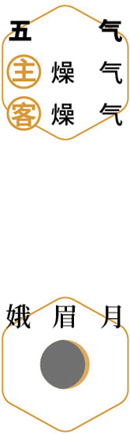
 望雁
望雁深秋｜节气｜ 寒露 ｜时间｜ 十月八日至十月廿三日
今年寒露需特别注意的健康问题：脾胃虚、皮肤干燥、咳嗽
原料：桂花、枸杞。
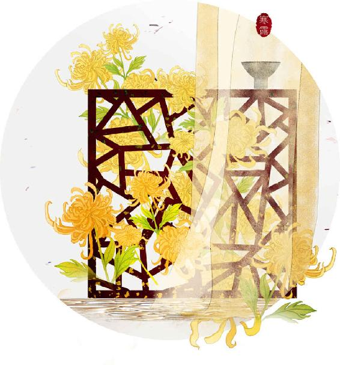
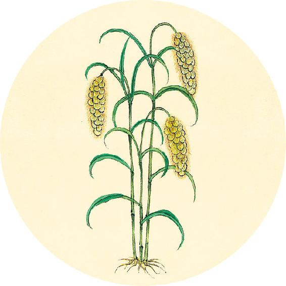
节气食方
银耳羹（从秋分吃到立春）
秋燥会使人体产生三燥（肺燥、肠燥、皮肤燥），有的人还会“上燥下湿”。所以秋冬要吃银耳来滋阴补水，加入百合可增强润燥的作用。百合清虚热、润肺、化痰，是清润不上火的补品。
银耳百合羹
做法：银耳1小朵、百合（干品）1小把一起炖煮。
【释义】五谷入胃，其化生的一部分精微之气被输散到肝脏，再由肝将此精微之气濡润周身的筋络。
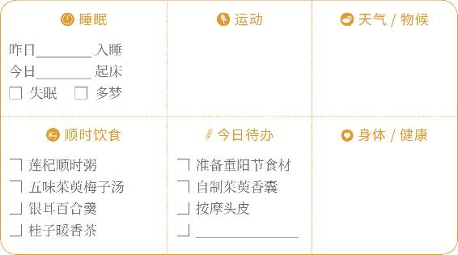

望雁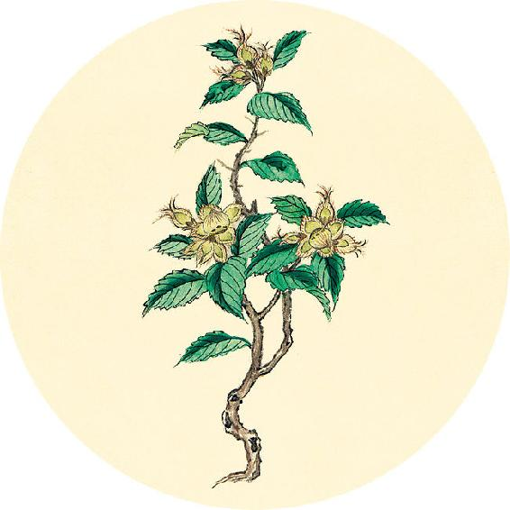
二十四节气茶养生
今年寒露节气品茶推荐：桂花茶。
桂子暖香茶
原料：桂花（干品）3克、枸杞1小把。
做法：沸水冲泡代茶饮；或用五味茱萸梅子汤冲泡同饮。
功效：预防肝血虚，暖血活血，调理咳喘，清新口气，常饮能使眼睛更明亮。
食气入胃，浊气归心（疑似为“脾”），淫精于脉。
——黄帝内经·素问·经脉别论
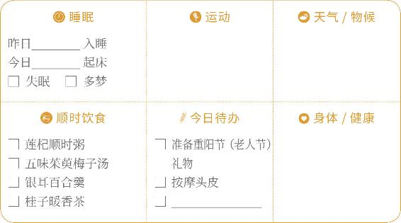
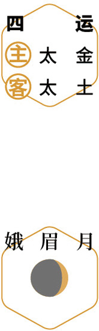
赏桂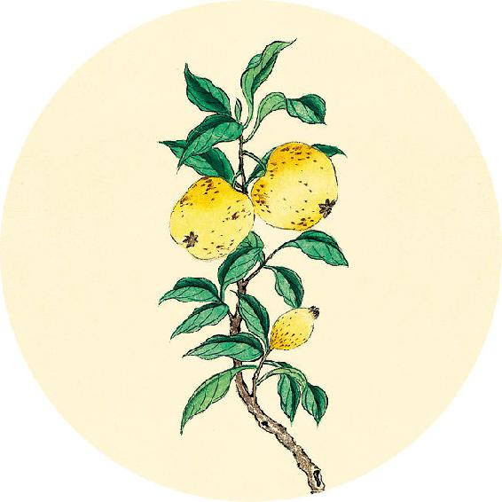
健康提示
从寒露开始，进入秋天的第三个月——深秋，养生的关键词是“滋养肝血”。
前半月：理血活血。
后半月：暖血补血。
今年寒露的养生特殊重点——
保养重点：肠道、胃。
容易出现的问题：脾胃虚、皮肤干燥、咳嗽。
【释义】五谷入胃，其化生的精微之气，注入于心，再由心将此精气滋养于血脉。
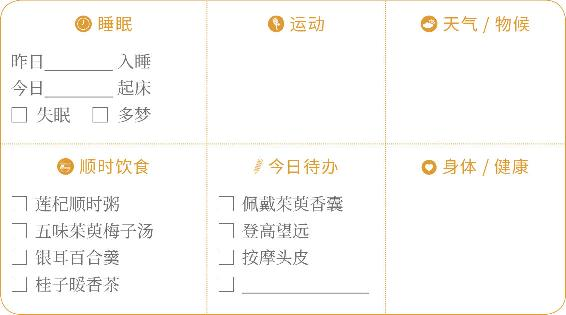
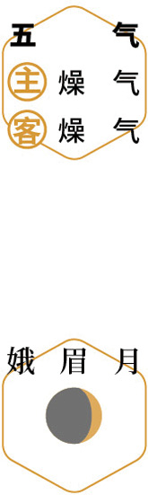
扫屋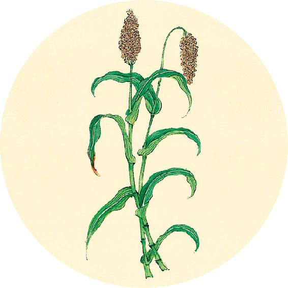
这个月是世界乳腺癌宣传月。
一候反思
自查是否具备以下患乳腺疾病的信号。
经前乳房胀痛 □ 是 □ 否
乳腺增生 □ 是 □ 否 黄褐斑 □ 是 □ 否
面色暗沉 □ 是 □ 否 月经紊乱 □ 是 □ 否
如有1个答“是”，可常用疏肝理气、活血化瘀的中药外敷胸部，经常按摩疏通乳腺（方法见12月17日）；如有2个答“是”，可以喝乳腺保养的茶饮（见12月12日）。
饮入于胃，游溢精气，上输于脾；脾气散精，上归于肺；通调水道，下输膀胱。水精四布，五经并行，合于四时五脏阴阳，《揆（kuí）度》以为常也。
——黄帝内经·素问·经脉别论
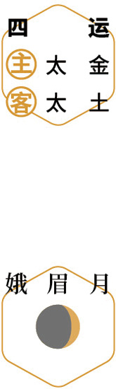
佩香囊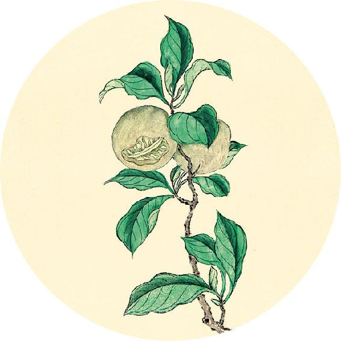
健康提示
今天是世界关节炎日。
关节炎泛指发生在人体关节及其周围组织的炎性疾病，可分为数十种。临床表现为关节的红、肿、热、痛、功能障碍及关节畸形。
预防膝关节炎的四字经：
1. 慢下楼梯。
2. 常戴护膝。
3. 锻炼腿肌。
4. 足浴暖膝。
（以上4种方法详见12月2、3日）
【释义】水液进入胃里，放散精气，上行输送到脾脏；脾脏散布精华，又向上输送到肺；肺气通调水道，又下行输入到膀胱。这样，气化水行，散布于周身皮毛，流行在五脏经脉里，符合四时五脏阴阳动静的变化，就是经脉的正常现象。
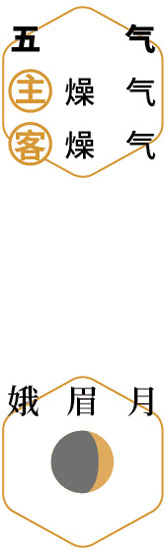
问安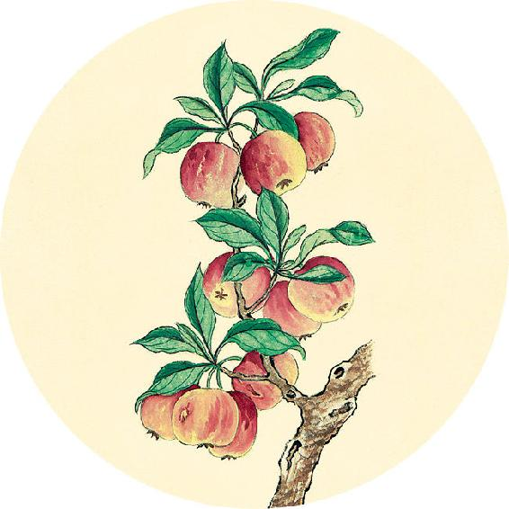
健康提示
重阳节与茱萸
吴茱萸：是一味入肝经的好药。张仲景有一个名方——吴茱萸汤，可以温中补虚、降逆止呕，主治肝胃虚寒证，对于慢性胃炎、孕期呕吐、神经性头痛、手脚冰冷等都有奇效。
山茱萸：补肾中成药“地黄丸系列”的一味重要原料。它可以平补阴阳，凡是肾虚的人，无论阳虚、阴虚，都用得上山茱萸。
揆（kuí）度者，度病之浅深也；奇恒者，言奇病也。
——黄帝内经·素问·玉版论要
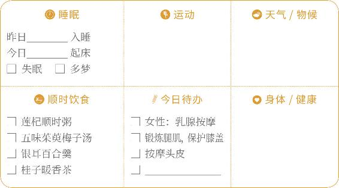
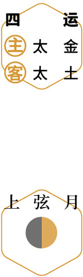
赏菊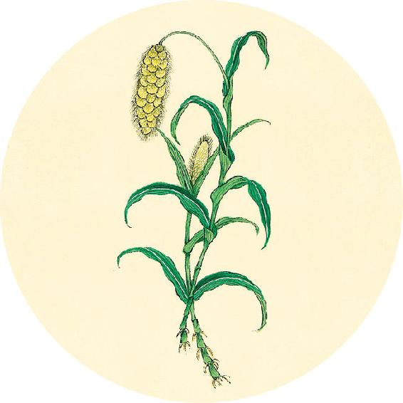
读书
“辟恶茱萸囊，延年菊花酒。
与子结绸缪，丹心此何有。”
——唐·郭元振《子夜四时歌·秋歌》
古人过重阳节，饮菊花酒，佩戴茱萸香囊，以辟邪防病。菊花有降压作用。茱萸，指的是中药吴茱萸，它有浓烈的香气，能温暖肝经、散寒助阳，燥湿的效果非常强。
【释义】“揆度”法是度量疾病的深浅，而“奇恒”法是辨别那些异乎寻常的疾病。
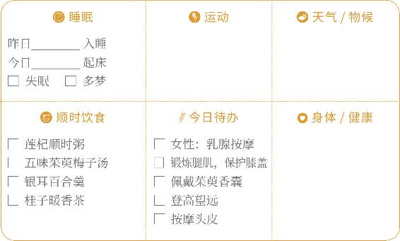
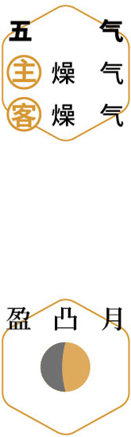
孝亲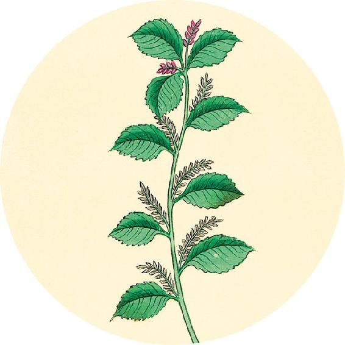
健康提示
身体有湿气或爱上火的人，可以用茱萸足贴来保健。
茱萸足贴
原料：吴茱萸、醋。
做法：将吴茱萸打粉，用醋调和，每晚敷在双脚心涌泉穴（小儿咳嗽者敷在双脚内侧边缘的公孙穴）。
功效：
1. 祛除湿气，对调理口腔溃疡、青春痘、皮肤湿疹有帮助。
2. 引火下行，对慢性咽炎、高血压、牙龈肿痛、上热下寒的人，和男性虚劳有调理作用。
请言道之至数，五色脉变，揆度奇恒，道在于一。
——黄帝内经·素问·玉版论要
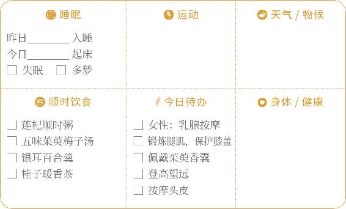
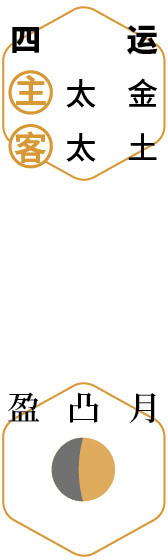
教子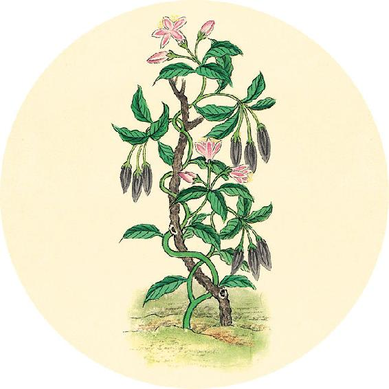
健康提示
怎样识别真假吴茱萸？
吴茱萸以次充好的现象比较多，要注意识别。
常见伪品有臭辣子、马桑子、华南吴萸、云南吴萸等。
伪品：通常颜色偏棕偏黑，香气淡。
真品：表皮绿色，香气很浓烈。
此外，由于吴茱萸价格很贵，所以便宜的不太可能是正品。
【释义】请允许我讲讲诊病的至理，面部五色、脉象的变化，揆度和奇恒，虽然所指不同。原则都在于一。（人体的脉象与天地如一，随四季变化。——允斌注）
登高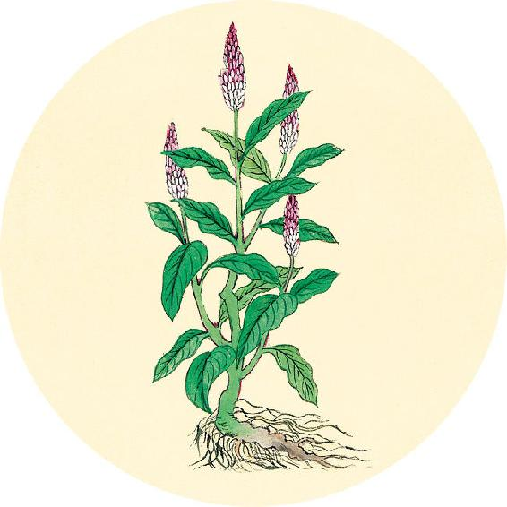
二候反思
自查是否具备患乳腺癌危险因素。
一、心理因素：
□ 性格要强
□ 感情受挫
□ 精神紧张
□ 经常激动
□ 心情压抑
（10月18日继续）
神转不回，回则不转，乃失其机。
——黄帝内经·素问·玉版论要
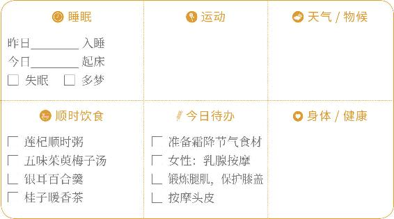
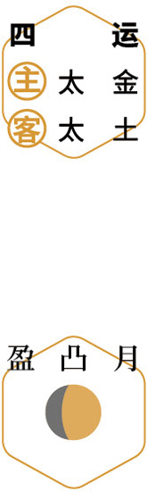
观叶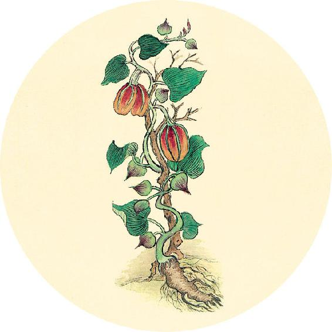
健康提示
自查是否具备乳腺癌发病危险因素。
二、身体因素
□ 长期月经紊乱
□ 长期接触放射线、甲苯、甲醛、农药等致癌源者
□ 经常服用避孕药或雌激素
□ 35岁以后初次生育或者未生育
□ 初潮年龄小于12岁
□ 绝经年龄超过55岁
□ 家族遗传
【释义】人体的气血，是随着四季的变化向前运转而不回折的，如果回折了，就会失却生机。
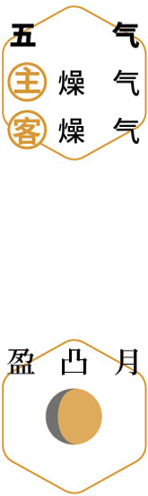
赏菊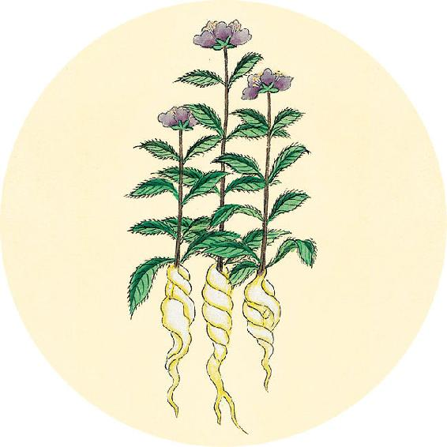
健康提示
在中国，乳腺癌是女性患癌的首位。
女性乳腺癌高发的年龄段是45～55岁、65～75岁，更年期以后的女性也要预防乳腺癌。
预防乳腺疾病从三方面入手：
1. 心理调适：乳房为肝经所主，是反映人体情感压力的部位。情绪不安，心绪郁闷，容易引起乳腺疾病。
2. 饮食调理（食方见12月12日）。
3. 乳腺疏通（做法见12月17日）。
容色（据《黄帝内经太素》，“容”应为“客”）见上下左右，各在其要。其色见浅者，汤液主治，十日已。其见深者，必齐（一说“必“应为“火“。”必齐“指煮汤药）主治，二十一日已。其见大深者，醪酒（“酒”字误，应为“醴lǐ”）主治，百日已。色夭面脱不治，百日尽已。
——黄帝内经·素问·玉版论要
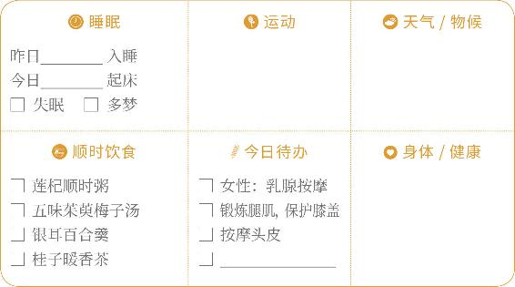
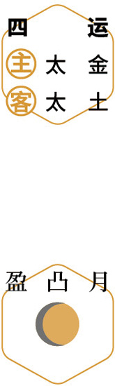
按摩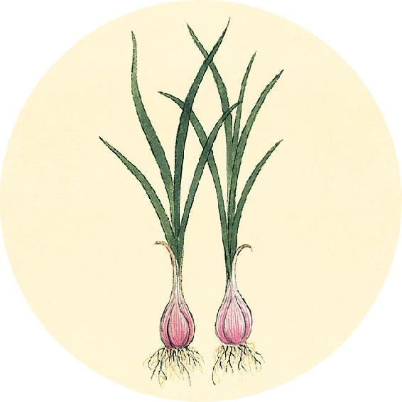
健康提示
今天是世界骨质疏松日。
在中国，骨质疏松症人群居世界第一，有不少孩子也出现骨量不足的现象。
这些食物有助于预防骨质疏松：
主食——藜麦
干果——枸杞
水果——葡萄
蔬菜——苦藠
补药——山茱萸
【释义】客色（因季节、气候或其他外界因素影响，人体面色出现的暂时改变）呈现在鼻子上下左右的不同部位，应注意分别察看。客色浅的，说明病轻，可用五谷汤液调理，约十天能好。客色深的，须服汤剂治疗，约二十一天能好。客色太深的，要用药酒治疗，约百天能好。假如气色晦暗、面容瘦削脱形，病就不能治好，到一百天就不治了。
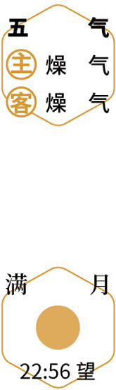
望月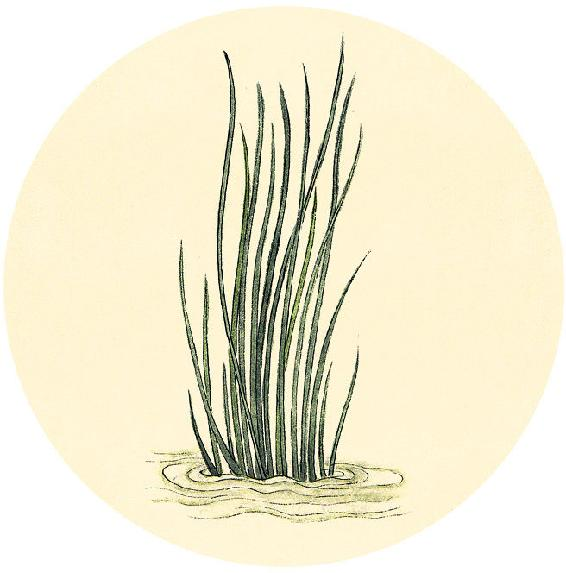
食材准备
后天进入霜降节气。
1. 银耳桑椹羹
原料：银耳、桑椹。
2. 双莲墨鱼汤
原料：墨鱼1～2只、肥肉或鸡肉50克、莲藕250克、莲子20粒、枸杞20粒、陈皮1/2个、带皮生姜3片。
3. 辛丑岁五气保健方：五味茱萸梅子汤（从秋分喝到立冬，做法见10月5日）
原料：五味子、罗汉果、乌梅、大枣、山楂、甘草、川陈皮，气虚的人加黄芪。
4.养肝明目茶
原料：带壳桂圆干、红枣、枸杞子、杭菊花，喜饮茶者可加红茶。
5.辛丑岁全年保健方：莲杞顺时粥
原料：炒荷叶、川陈皮、莲子、枸杞子、茯苓、粥料。
脉短气绝死，病温虚甚死。
——黄帝内经·素问·玉版论要
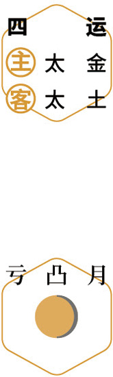
进补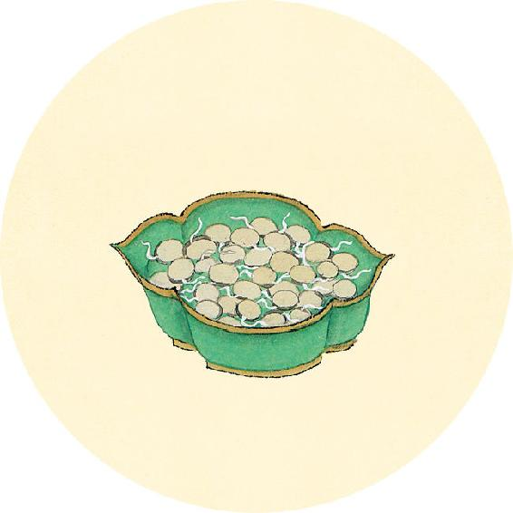
健康提示
“传统医药是世界各民族的文化瑰宝，数千年来，对人类健康和医学进步做出了不可磨灭的贡献。我们认为，为了人类健康，必须发展传统医药。”
——1991《北京宣言》（人类健康需要传统医药）
节气总结备
银耳百合羹________次
桂子暖香茶________次
五味茱萸梅子汤________次
莲杞顺时粥________次
身体哪些方面有改善_________________________
【释义】病人脉气短促，真气将竭，是死证；温热病而阴血虚极的，也是死证。
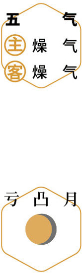
静养